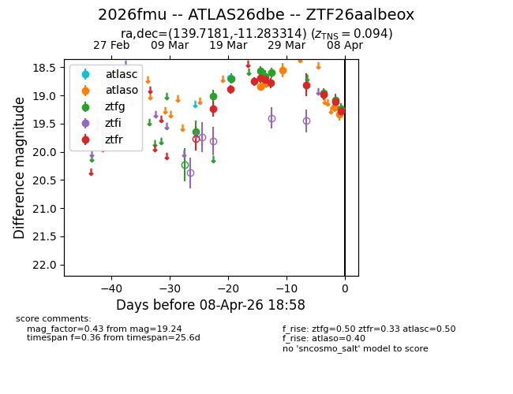
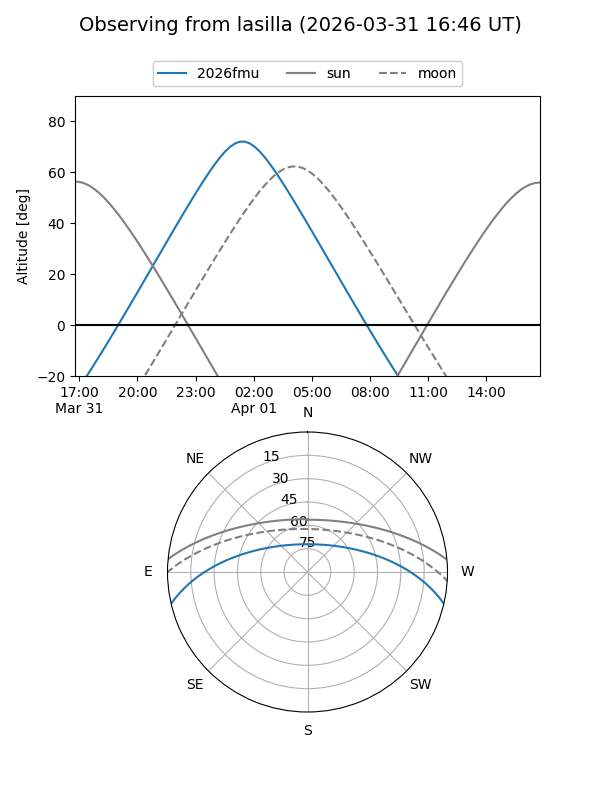
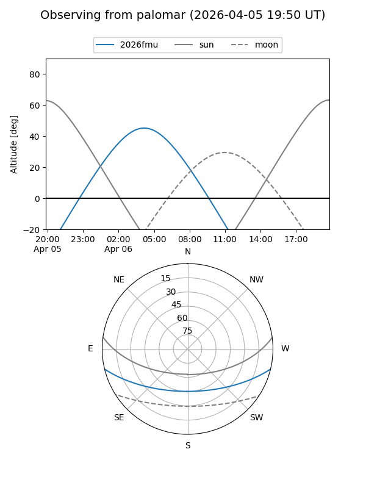
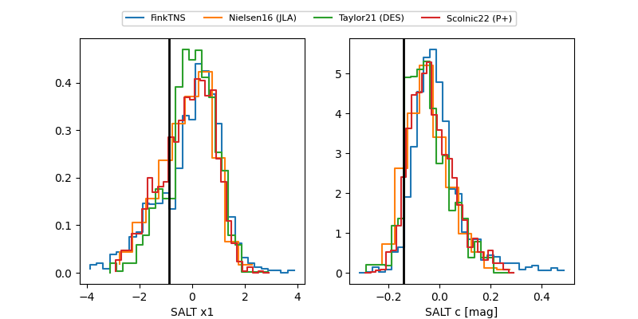

2026fmu
Target 2026fmu at 2026-04-08 19:03
Aliases and brokers:
FINK: link
Lasair: link
ALeRCE: link
TNS: link
YSE: link
alt names
ZTF26aalbeox (ztf,fink_ztf)
2026fmu (tns,yse)
ATLAS26dbe (atlas)
Coordinates:
equatorial (ra, dec) = 139.7181,-11.28331
equatorial (HMS+DMS) = 09:18:52.34,-11:16:59.93
galactic (l, b) = (242.3451,+25.74177)
Flags:
confirmed ia
Photometry:
last atlasc=18.69, atlaso=19.34, ztfg=19.24, ztfr=19.27
1 atlasc, 6 atlaso, 9 ztfg, 10 ztfr detections
Lightcurve

Visibility


Additional plots
